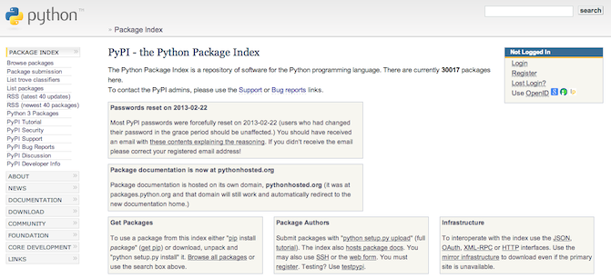
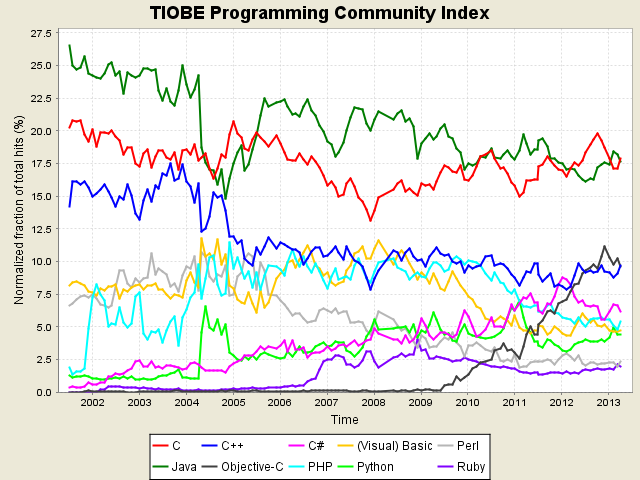
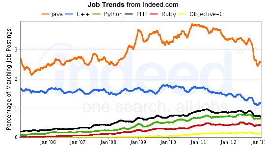

Why Python?
Why Not Ruby?
From the perspective of an average level programmer
Adieu
Apr 17, 2013
Adieu
Apr 17, 2013
# Search directory tree for all duplicate files
hashmap = {}
for path, dirs, files in os.walk('.'):
for filename in files:
fullname = os.path.join(path, filename)
with open(fullname) as f:
d= f.read()
h = hashlib.md5(d).hexdigest()
filelist = hashmap.setdefault(h, [])
filelist.append(fullname)
pprint.pprint(hashmap)
(define cps
(lambda (exp)
(letrec
([trivs '(zero? sub1)]
[id (lambda (v) v)]
[C~ (lambda (v) `(k ,v))] ; tail context
[fv (let ((n -1))
(lambda ()
(set! n (+ 1 n))
(string->symbol (string-append "v" (number->string n)))))]
[cps1
(lambda (exp C)
(pmatch exp
[,x (guard (not (pair? x))) (C x)]
[(if ,test ,conseq ,alt)
(cps1 test
(lambda (t)
(if (memq C (list C~ id))
`(if ,t ,(cps1 conseq C) ,(cps1 alt C))
(let ((v* (fv)))
`(let ((k (lambda (,v*) ,(C v*))))
(if ,t ,(cps1 conseq C~) ,(cps1 alt C~)))))))]
[(lambda (,x) ,body)
(C `(lambda (,x k) ,(cps1 body C~)))]
[(,op ,a ,b)
(cps1 a (lambda (v1)
(cps1 b (lambda (v2)
(C `(,op ,v1 ,v2))))))]
[(,rator ,rand)
(cps1 rator
(lambda (r)
(cps1 rand
(lambda (d)
(cond
[(memq r trivs) (C `(,r ,d))]
[(eq? C C~) `(,r ,d k)] ; tail call
[else
(let ((v* (fv)))
`(,r ,d (lambda (,v*) ,(C v*))))])))))]))])
(cps1 exp id))))



相关链接
Slides地址